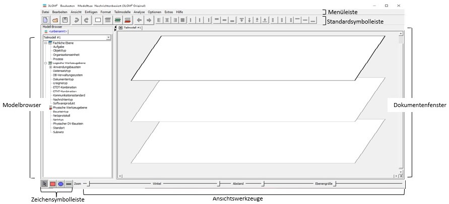
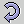
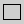
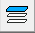
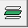
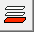
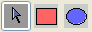
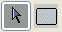
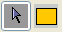

| Neues Modell | Über diesen Menüpunkt können Sie ein neues Modell anlegen. Im Modellbrowser erscheint ein neuer Reiter mit dem Namen des neuen Modells. Haben Sie mehrere Modelle geöffnet, können Sie über diese Reiter das zu bearbeitende Modell auswählen. |
| Öffnen... | Über diesen Menüpunkt können Sie ein bereits vorhandenes Modell öffnen. Es erscheint ein entsprechender Dialog, in dem Sie die zu öffnende Datei auswählen können. Abgespeicherte 3LGM²-Modelle haben üblicherweise die Endung .3lgm. |
| Speichern | Über diesen Menüpunkt können Sie Ihre Änderungen an einem Modell speichern. Haben Sie ein neues Modell geöffnet, welches bisher noch nicht gespeichert wurde, so erscheint ein Dialog, in dem Sie ein Verzeichnis für die zu speichernde Datei auswählen und den Namen der Datei angeben können. Abgespeicherte 3LGM²-Modelle haben üblicherweise die Endung .3lgm. Wurde Ihr neues Modell bereits in einer Datei gespeichert oder haben Sie eine vorhandene Datei geöffnet, so wird der aktuelle Zustand des Modells beim anklicken der Schaltfläche Modell speichern in diese Datei gesichert. |
| Speichern unter... | Über diesen Menüpunkt können Sie Ihre Änderungen an einem Modell in einer neu zu benennenden Datei speichern. Es erscheint ein Dialog, in dem Sie ein Verzeichnis für die zu speichernde Datei auswählen und den Namen der Datei angeben können. Abgespeicherte 3LGM²-Modelle haben üblicherweise die Endung .3lgm. |
| Schließen | Schließt das aktuelle Modell. |
| Beschreibungen | Über diesen Menüpunkt gelangen Sie zu einem Texteditor, in dem Sie die einzelnen Teilmodelle des momentan ausgewählten Modells beschreiben können. Wählen Sie über die Reiter ein Teilmodell aus und geben Sie Ihre Beschreibung oder Hinweise zu diesem Modell als Freitext ein. |
| Import... | Die Importfunktion gibt Ihnen die Möglichkeit ein bereits existierendes Modell oder Teilmodell in Ihr Modell zu importieren. Lesen dazu den Abschnitt Importieren von Modellen. |
| Export... | Die Exportfunktion gibt Ihnen die Möglichkeit Ihr Modell in ein anderes Format oder als Grafik zu exportieren. Lesen dazu den Abschnitt Exportieren von Modellen. |
| Drucken... | Diese Funktion wurde noch nicht implementiert. |
| Beenden | Schließt den 3LGM²-Baukasten. |
| Rückgängig machen | Über diesen Menüpunkt können Sie die letzten Änderungen an Ihrem Modell rückgängig machen. |
| Wiederherstellen | Über diesen Menüpunkt können Sie die letzten rückgängig gemachten Änderungen wieder herstellen. |
| Suchen | Über diesen Menüpunkt erhalten Sie einen Dialog zur Textsuche in ihrem Modell. Sie können eine Bezeichnung angeben, nach der gesucht werden soll, oder eine Beschreibung, oder beides. Wenn Sie nur in den Bezeichnern und Beschreibungen eines bestimmten Knotentyps suchen wollen, so können Sie diesen in der Auswahlliste Knotentyp wählen. Haben Sie keinen Knotentyp ausgewählt, werden die Bezeichner und Beschreibungen aller Knoten nach dem von Ihnen angegebenen Text durchsucht. |
| Alles markieren | Markiert alle Elemente des gewählten Teilmodells. |
| Kopieren | Kopiert die ausgewählten Elemente in die Zwischenablage. |
| Ausschneiden | Kopiert die ausgewählten Elemente in die Zwischenablage und entfernt sie aus dem Modell. |
| Einfügen | Fügt den Inhalt der Zwischenablage an der gewählten Stelle ein. |
| Aus Teilmodell löschen | Entfernt das ausgewählte Element aus dem Teilmodell. |
| Symbolleisten | Über dieses Menü können Sie verschiedene Symbolleisten des Baukastens ein- und ausblenden. |
| Modellbrowser | Über diesen Menüpunkt können Sie den Modellbrowser ausblenden bzw. anzeigen |
| Templatebrowser | Über diesen Menüpunkt können Sie den Templatebrowser ausblenden bzw. anzeigen |
| Titeln der Ansichten anzeigen | durch diese Aktion können Sie alle Browsertiteln ausblenden bzw. anzeigen |
| Einzel-Ebenen-Ansicht/ Drei-Ebenen-Ansicht |
Über diesen Menüpunkt können Sie die Ansichten im Dokumentfenster umschalten. Sie haben die Wahl zwischen der Ansicht aller drei Ebenen in einem Fenster oder der Einzelansicht der Ebenen. |
| Fachliche Ebene | Wählt die Fachliche Ebene aus. |
| Logische Werkzeugebene | Wählt die Logische Werkzeugebene aus. |
| Physische Werkzeugebene | Wählt die Physische Werkzeugebene aus. |
| Einstellungen... | Öffnet einen Dialog, mit dem Sie die Ansicht des Dokumentfensters ändern können. Ist die Ansicht der Ebenen im Dokumentfenster auf Einzelansicht der Ebenen eingestellt, so kann nur der Zoomfaktor verändert werden. Bei Ansicht aller drei Ebenen im Dokumentfenster, können Zoomfaktor, Ebenenwinkel und Ebenenabstand verändert werden. Die Ansichten können Sie mit Hilfe des Knopfes 'MultiView' verändern. |
| Matrix-Sicht | Öffnet eine neue Matrix-Sicht. Für Informationen zur Arbeit mit der Matrix-Sicht lesen Sie bitte
unter |
| Globales Layout | Über diesen Menüpunkt können Sie das globale Layout Ihres Modells modifizieren. Es öffnet sich ein Dialog, in dem Sie Form, Farbe und Font für jedes einzelne Baukastenelement einstellen können. Die Einstellung werden nach drücken der Schaltfläche OK bzw. Übernehmen für alle Elemente des Baukastens wirksam. |
| Ebenen Layout.... | Über drei Unterpunkte können Sie das Aussehen der aktuell ausgewählten Ebene verändern. Wählen Sie:
|
| Neues Teilmodell | Erzeugt ein neues Teilmodell. Ein Dialog erscheint, in dem Sie aufgefordert werden, das Teilmodell zu benennen. Klicken Sie danach auf OK und das Teilmodell wird angezeigt. |
| Teilmodell löschen | Über diesen Menüpunkt können Sie Ihr aktuelles Teilmodell löschen. |
| Teilmodell umbenennen | Über diesen Menüpunkt können Sie Ihr aktuelles Teilmodell umbenennen. |
| Repository | zeigt eine Auflistung der vordefinierten Analysen. |
| Editor | Öffnet einen Dialog zur Erzeugung neuer Analysen. |
| Analyseergebnis zurücksetzen | Über diesen Menüpunkt können Sie das Analyseergebnis, welches auch direkt im Modell angezeigt wird, zurücksetzen. |
| Für Analyseergebnis neues Teilmodell anlegen | Wenn diese Option ausgewählt ist, wird für jedes Analyseergebnis ein neues Teilmodell
angelegt. Vor dem Start der Analyse werden Sie aufgefordert einen neuen Namen für das entstehende Modell zu vergeben. Mehr zum Thema Analyse. |
| Analysefarbe wählen | hier können Sie die Farbe der Analyse auswälen |
| Redundanzanalyse | bei diesem Menüpunkt, werden die Analysen auf Redundanz geprüft |
| Redundanz von Aufgaben bezüglich Anwendungsbausteinkonfigurationen | hier werden die Redundanz von Aufgaben bezüglich Anwendungsbausteinkonfigurationen angezeigt |
| Redundanz von Objekttypen bezüglich Logische Speicher | hier werden die Redundanz von Objekttypen bezüglich Logische Speicher angezeigt |
| Datenverfügbarkeit | hier werden die Daten auf Verfügbarkeit geprüft |
| Allgemein | Öffnet einen Dialog, in dem Sie einige allgemeine Einstellungen vornehmen können. |
| Modell-Browser | Öffnet einen Dialog, in dem Sie einige Einstellung zur Darstellung des Modellbrowsers vornehmen können. |
| Grafik | Öffnet einen Dialog, in dem Sie einige Einstellung zur Darstellung der Grafiken im Dokumentfenster vornehmen können. |
| RMI - Eigenschaften | |
| Standard Modelltyp festlegen... | Öffnet einen Dialog, wo Sie entscheiden können, welcher Modelltyp gebraucht wird. |
| Rahmen um Textfelder anzeigen | Wenn Sie Textfelder angelegt haben können Sie mit dieser Option festlegen, ob ein Rahmen um die Textfelder angezeigt werden soll. |
| Sprache (Language) | hier wählen Sie Ihre beliebte Sprache. |
| Experten Modus | Mit dieser Funktion werden Ihnen zusätzlichen Elemente im Modell angezeigt. |
| Benutzerdefinierte Eigenschaftsfelder... | |
| Attribut - Editor... | Öffnet einen Dialog, in dem Sie Attributen editieren können. |
| Kennzahlberechnung einschalten | hiermit können die Kennzahlberechnung einschalten. |
| ETNT-Kombinationen automatisch zuweisen | Bei Auswahl dieser Option werden die ETNT-Kombinationen der Schnittstellen automatisch den angeschlossenen
Kommunikationsbeziehungen zugewiesen. Dabei gilt, dass jeder Kommunikationsbeziehung genau die ETNT-Beziehungen zugewiesen
werden, für die gilt, dass die Schnittstelle, von der die Kommunikationsbeziehung ausgeht, diese ETNT-Kombination sendet
und die Schnittstelle, zu der die Kommunikationsbeziehung führt, diese ETNT-Kombination empfangen kann.
Wenn also in Ihrem Modell für jeweils zwei Schnittstellen, die über eine Kommunikationsbeziehung miteinander verbunden
sind und die gleiche ETNT-Kombination senden bzw. empfangen können, generell gilt, dass diese ETNT-Kombination dann auch
über diese Kommunikationsbeziehung übertragen wird, so können Sie diese Funktion aktivieren. Bei der Aktivierung dieser Funktion werden automatisch alle bereits in Ihrem Modell vorhandenen Kommunikationsbeziehungen überprüft und, wenn nötig, aktualisiert. Anmerkung: In älteren Versionen des 3LGM bestand noch keine Möglichkeit Kommunikationsverbindungen ETNT-Kombinationen zuzuweisen. Durch automatische Zuweisung der ETNT-Kombinationen zu den Kommunikationsbeziehungen haben können Sie diese fehlenden Eintragungen auf schnellem Wege erzeugen. |
| Plugin | Öffnet eine Auswahl von Plugins. |
| Nebeneinander | Bei Auswahl dieser Option werden alle offenen Fenster nebeneinander dargestellt. |
| Überlappend | Bei Auswahl dieser Option werden alle offenen Fenster untereinander überlappend dargestellt. |
| Hilfe | Startet die Online-Hilfe des 3LGM²-Baukastens. |
| Direkthilfe | Diese Funktion wurde noch nicht implementiert. |
| Information | Öffnet ein Fenster mit Informationen zum 3LGM²-Baukasten. |
Neues Modell erzeugenÜber diese Schaltfläche können Sie ein neues Modell anlegen. Im Modellbrowser erscheint ein neuer Reiter mit dem Namen des neuen Modells. Haben Sie mehrere Modelle geöffnet, können Sie über diese Reiter das zu bearbeitende Modell auswählen. |
|
Modell öffnenÜber diese Schaltfläche können Sie ein bereits vorhandenes Modell öffnen. Es erscheint ein entsprechender Dialog, in dem Sie die zu öffnende Datei auswählen können. Abgespeicherte 3LGM²-Modelle haben üblicherweise die Endung .3lgm. |
|
Modell speichernÜber diese Schaltfläche können Sie Ihre Änderungen an einem Modell speichern. Haben Sie ein neues Modell geöffnet, welches bisher noch nicht gespeichert wurde, so erscheint ein Dialog, in dem Sie ein Verzeichnis für die zu speichernde Datei auswählen und den Namen der Datei angeben können. Abgespeicherte 3LGM²-Modelle haben üblicherweise die Endung .3lgm. Wurde Ihr neues Modell bereits in einer Datei gespeichert oder haben Sie eine vorhandene Datei geöffnet, so wird der aktuelle Zustand des Modells beim anklicken der Schaltfläche Modell speichern in diese Datei gesichert. |
|
 |
Rückgängig machenÜber diese Schaltfläche können Sie die letzten Änderungen an Ihrem Modell rückgängig machen. |
WiederholenÜber diese Schaltfläche können Sie die letzten rückgängig gemachten Änderungen wieder herstellen. |
|
 |
MultiViewÜber diese Schaltfläche können Sie die Ansichten im Dokumentfenster umschalten. Sie haben die Wahl zwischen der Ansicht aller drei Ebenen in einem Fenster oder der Einzelansicht der Ebenen. |
 |
Fachliche EbeneWählt die Fachliche Ebene aus. |
 |
Logische WerkzeugebeneWählt die Logische Werkzeugebene aus. |
 |
Physische WerkzeugebeneWählt die Physische Werkzeugebene aus. |
für die Fachliche Ebene |
|
|
 |
Elemente markieren und bearbeitenWählen Sie diese Schaltfläche um Elemente der Fachlichen Ebene im Dokumentfenster zu markieren oder zu bearbeiten. Im Dokumentfenster können Sie jetzt mit einem Doppelklick auf eine Aufgabe oder einen Objekttyp deren Eigenschaftsdialog öffnen. Durch einmaligen Klick mit der rechten Maustaste auf eine Aufgabe oder einen Objekttyp wird ein Kontextmenü für das Element geöffnet.AufgabeWählen Sie diese Schaltfläche aus, um eine neue Aufgabe in der Fachlichen Ebene anzulegen. Gehen Sie mit der Sie mit der Maus in das Dokumentfenster. Der Mauszeiger ist jetzt als Fadenkreuz dargestellt. Klicken Sie mit der linken Maustaste auf eine freie Stelle in der Fachlichen Ebene. Es erscheint ein Dialogfenster, in dem Sie aufgefordert werden einen Namen für diese Aufgabe einzugeben.ObjekttypWählen Sie diese Schaltfläche aus, um einen neuen Objekttyp in der Fachlichen Ebene anzulegen. Gehen Sie mit der Sie mit der Maus in das Dokumentfenster. Der Mauszeiger ist jetzt als Fadenkreuz dargestellt. Klicken Sie mit der linken Maustaste auf eine freie Stelle in der Fachlichen Ebene. Es erscheint ein Dialogfenster, in dem Sie aufgefordert werden einen Namen für diesen Objekttyp einzugeben. |
für die Logische Werkzeugebene |
|
|
 |
Elemente markieren und bearbeitenWählen Sie diese Schaltfläche um Elemente der Logischen Werkzeugebene im Dokumentfenster zu markieren oder zu bearbeiten. Im Dokumentfenster können Sie jetzt mit einem Doppelklick auf einen Anwendungsbaustein dessen Eigenschaftsdialog öffnen. Durch einmaligen Klick mit der rechten Maustaste auf einen Anwendungsbaustein wird ein Kontextmenü geöffnet.AnwendungsbausteinWählen Sie diese Schaltfläche aus, um einen neuen Anwendungsbaustein in der Logischen Werkzeugebene anzulegen. Gehen Sie mit der Sie mit der Maus in das Dokumentfenster. Der Mauszeiger ist jetzt als Fadenkreuz dargestellt. Klicken Sie mit der linken Maustaste auf eine freie Stelle in der Logischen Werkzeugebene. Es erscheint ein Dialogfenster, in dem Sie aufgefordert werden einen Typ und einen Namen für diesen Anwendungsbaustein einzugeben. |
für die Physische Werkzeugebene |
|
|
 |
Elemente markieren und bearbeitenWählen Sie diese Schaltfläche um Elemente der Physischen Werkzeugebene im Dokumentfenster zu markieren oder zu bearbeiten. Im Dokumentfenster können Sie jetzt mit einem Doppelklick auf einen Physischen DV-Baustein dessen Eigenschaftsdialog öffnen. Durch einmaligen Klick mit der rechten Maustaste auf einen Physischen DV-Baustein wird ein Kontextmenü geöffnet.Physischer DV-BausteinWählen Sie diese Schaltfläche aus, um einen neuen Physischen DV-Baustein in der Physischen Werkzeugebene anzulegen. Gehen Sie mit der Sie mit der Maus in das Dokumentfenster. Der Mauszeiger ist jetzt als Fadenkreuz dargestellt. Klicken Sie mit der linken Maustaste auf eine freie Stelle in der Physischen Werkzeugebene. Es erscheint ein Dialogfenster, in dem Sie aufgefordert werden einen Namen für diesen Physischen DV-Baustein einzugeben. |